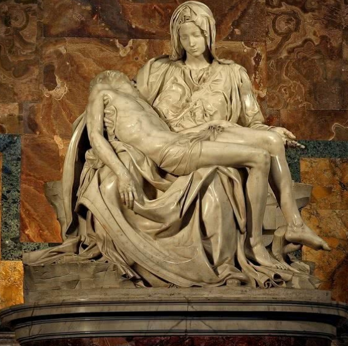
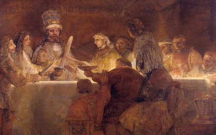
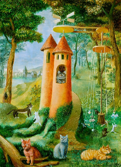

Home < Arte
Contenidos de Arte y Esculturas
MIGUEL ÁNGEL BUONARROTI
(1475 – 1564)
Imagen recuperada el 28_11_2021 de: https://www.culturagenial.com/
En esta obra Miguel Ángel, creo una escultura de mármol de la Virgen sosteniendo a su hijo. está obra fue creado en el
año 1498 entre 1499, para la iglesia de San Pedro, para el Vaticano.
REMBRANDT
La conspiración de Claudius Civilis
Obra Pintada en el año 1662
Imagen recuperada el 28_11_2021 de: todocuadros.com/
En esta obra se presenta una historia del siglo 1 a. C. que rembrandt retrata un pequeño pueblo que conspira contra
el gran imperio romano y su césar.
Información de la Obra
| Artista: | REMBRANDT |
| Ubicación: | Museo Nacional de Suecia |
| Fecha de creación: | 1661–1662 |
| Género: | Pintura de historia |
María de los Remedios, Alicia Rodriga Varo y Uranga
Cats Paradise
Obra Pintada en el año 1955
Imagen recuperada el 28_11_2021 de: https://www.tumbex.com/
En esta Obra que presenta María de los Remedios, Alicia Rodriga Varo y Uranga, utilizo la técnica de Óleo sobre Lienzo,
es una obra surrealismo. las obras más famosas de maría: Las dos Fridas (1932), Autorretrato con collar de espinas
y colibrí (1940)
Información de la Obra
| Artista: | María de los Remedios |
| Ubicación: | colección privada |
| Fecha de creación: | 1955 |
| Género: | Surrealismo |

Compartir;